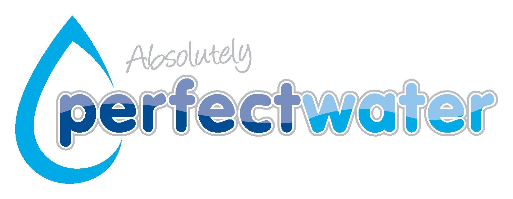

Developer Profile
I am a junior software developer and founder-builder working on real products, not just practice projects. My work combines front-end design, ASP.NET Core MVC, C#, Entity Framework Core, databases, Azure deployment, business workflows, and monetization-focused product thinking.
Logic Lab Studio — Founder & Full-Stack App Builder 2025 to Present
Role: Founder, developer, product designer, and builder of digital business systems.
I started Logic Lab Studio to build useful web platforms, business tools, landing pages, admin systems, and small SaaS products. The work has strengthened my ability to turn an idea into a working product with real business value.
- Built and improved websites, landing pages, promotional pages, and business-facing digital tools.
- Created HTML-first tools such as generators, branded pages, flyer-style layouts, and practical client-ready web assets.
- Worked on product positioning, pricing ideas, client acquisition, WhatsApp marketing, and service packaging.
- Designed systems with real-world use in mind: clear user flows, admin control, payment readiness, and scalable structure.
Vocentra — SaaS Job Board Platform ASP.NET Core MVC, EF Core, SQL Server, Azure
Role: Full-stack developer and product owner.
Vocentra is a real job board and hiring marketplace focused on structured local recruitment. The platform is designed to help job seekers apply easily while giving employers a paid, controlled way to publish job listings.
- Built core MVC features for jobs, applications, saved jobs, employer workflows, and admin moderation.
- Implemented production-focused architecture using ASP.NET Core MVC, Identity, roles, EF Core, and database-backed workflows.
- Worked through Azure deployment, Azure SQL configuration, application settings, production startup errors, migrations, and diagnostics.
- Designed payment-gated publishing logic where employers submit proof of payment and admins verify listings before they go live.
- Developed the product strategy around employer-paid listings, one-click apply, admin-gated publishing, and marketplace trust.
Business Website & E-commerce Builds Client-style projects and branded systems
Role: Web developer and digital product builder.
Through Logic Lab Studio, I have worked on practical website concepts for small businesses, clothing brands, food brands, portfolio pages, and marketing pages. These projects helped me improve the way I structure layouts, product pages, navigation, branding, and conversion-focused content.
- Created branded website concepts for small businesses and local brands.
- Worked on e-commerce-style layouts with product sections, category pages, calls to action, and responsive design.
- Designed promotional assets, image placeholders, testimonials, and one-page brand sections for client-facing use.
- Focused on building sites that are clean, mobile-friendly, and ready to turn visitors into leads or customers.
Automation & Algorithmic Systems C#, trading logic, state tracking, debugging
Role: Volunteer developer and technical problem solver.
I developed and maintained algorithmic trading logic in C#, working with rule-based systems, trade state tracking, cooldowns, loss recovery logic, and strategy switching. This improved my ability to debug complex flows and think carefully about risk, automation, and system behavior.
- Built C# logic for automated trading workflows and decision-based execution.
- Improved my understanding of state management, defensive coding, and error handling.
- Worked with financial-style logic where small mistakes can create real consequences, which strengthened my attention to detail.
Absolutely Perfect Water Orkney June 2024 to January 2025

Roles: Sales Assistant, Water Technician, and Product Marketer.
This role gave me practical business experience before and during my move into software. I worked directly with customers, promoted the franchise, supported walk-in sales, helped with water purification tasks, and contributed ideas around pricing, packaging, loyalty, and customer experience.
- Handled customer service and explained product value clearly to customers.
- Promoted a newly opened local franchise and supported walk-in sales growth.
- Suggested business improvements around dynamic pricing, branded packaging, and loyalty strategy.
- Learned how real businesses depend on operations, trust, customer service, and consistent presentation.
Current Direction Production-ready SaaS, dashboards, and business platforms
I am currently focused on becoming stronger at building complete production-ready systems. My goal is to ship platforms that can be deployed, maintained, monetized, and used by real customers.
- Building better ASP.NET Core MVC applications with clean models, controllers, services, and database layers.
- Improving admin dashboards, authentication, authorization, payment workflows, and deployment reliability.
- Creating useful small tools and platforms under Logic Lab Studio that can attract clients and generate revenue.
- Continuing to learn by building real products instead of only following tutorials.